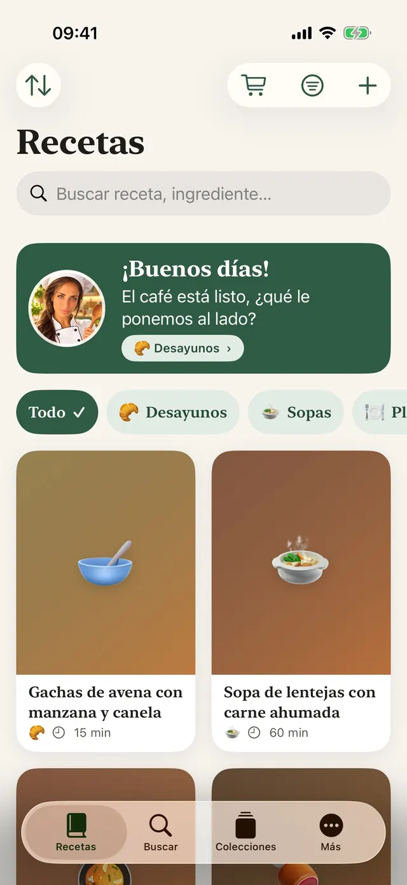
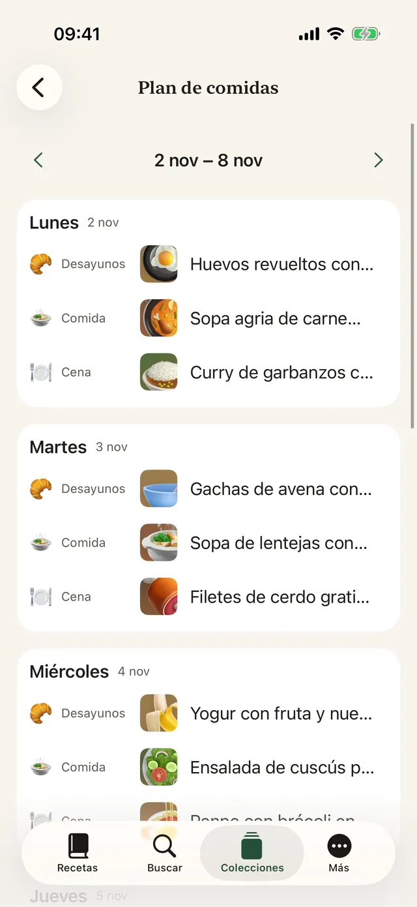
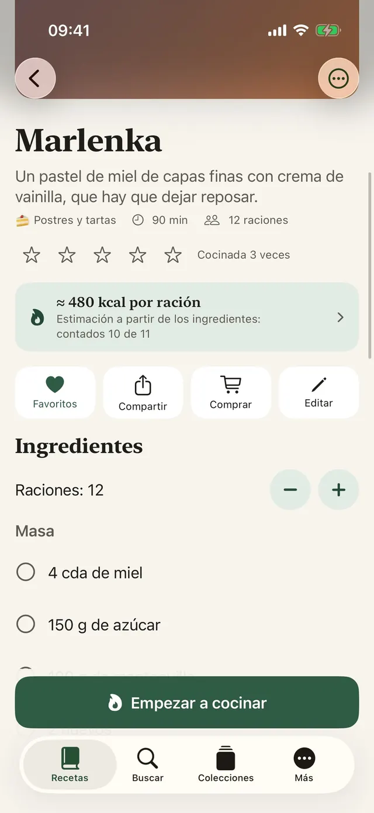
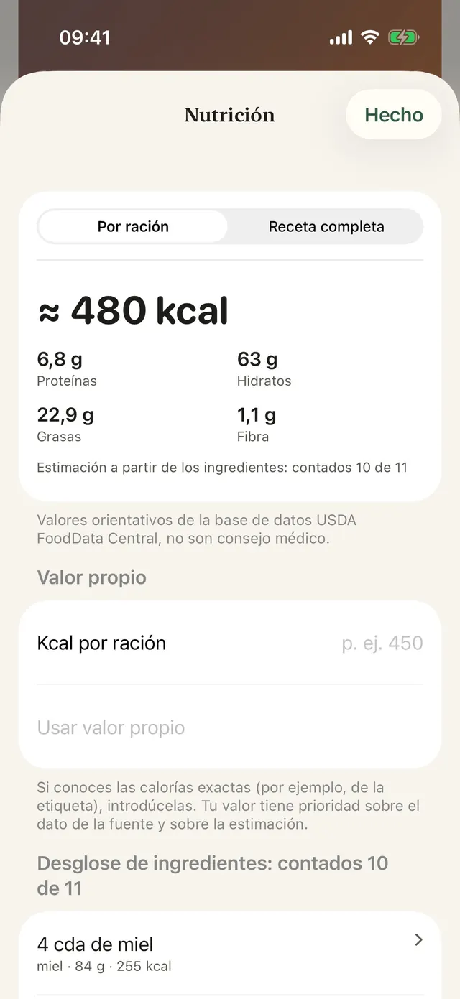
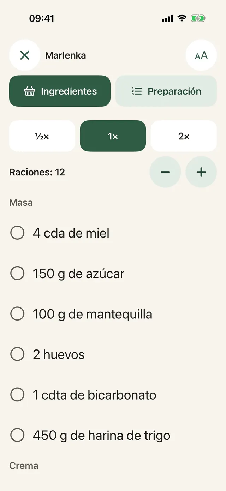
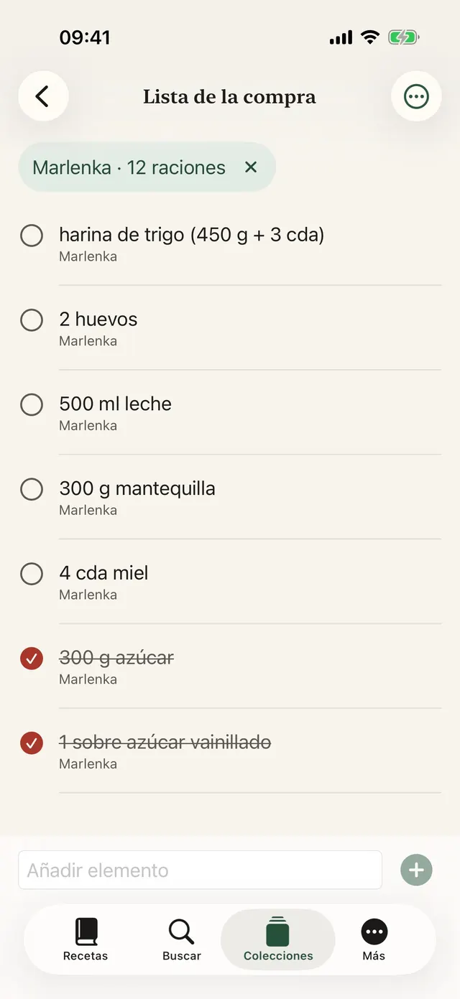
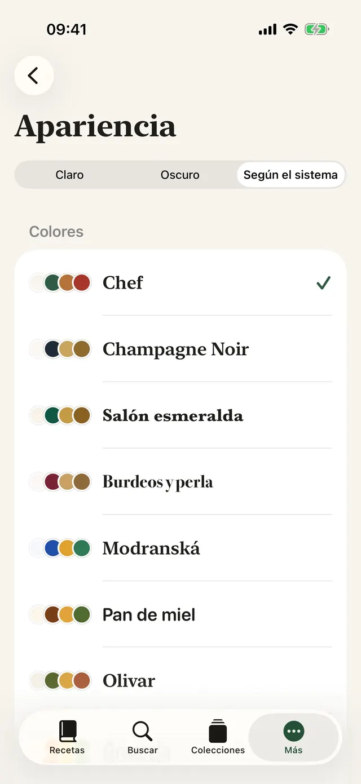
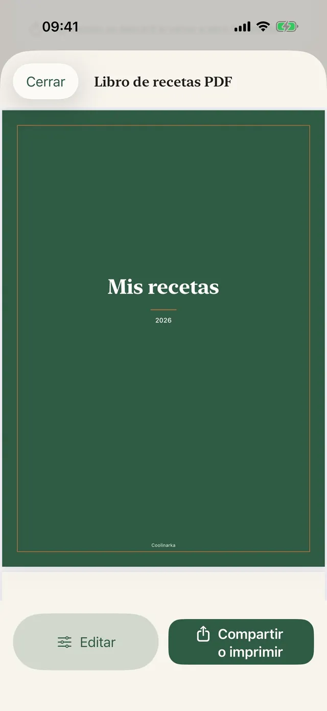
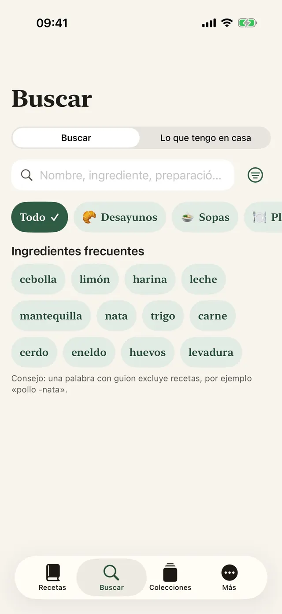
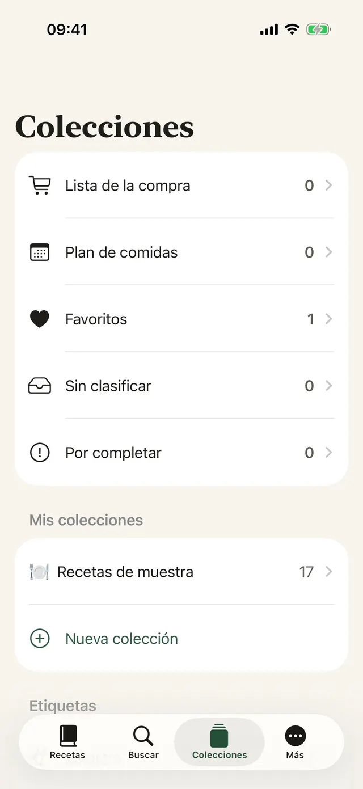

Guardada con un toque
En Instagram, Facebook o Safari, toca Compartir y elige Coolinarka.
Guarda una receta de Instagram, Facebook, la web o un vídeo. Coolinarka la convierte en ingredientes y pasos bien claros y te guía mientras cocinas, paso a paso.
Para iPhone y iPad, gratis. La versión para Android llegará pronto a Google Play. Avísame cuando salgaPara iPhone, iPad y Android, gratis.


Así se ve una receta en una publicación de redes sociales. Un toque y queda en orden, con raciones que puedes recalcular.
😍😍 Penne con brócoli en salsa de nata!!! 400 g de penne, 1 brócoli, 250 ml de nata para cocinar, 2 dientes de ajo, 50 g de parmesano, sal y pimienta ... Cocemos los penne según las instrucciones del envase y, en los últimos 4 minutos, añadimos los ramilletes de brócoli. En una sartén con aceite doramos el ajo un momento, añadimos la nata y la calentamos. Mezclamos la pasta escurrida y el brócoli con la salsa y espolvoreamos con el parmesano. 🔥🔥 #penne #food
Una pasta sencilla que gusta también a los niños.
Receta de ejemplo de la app. Las publicaciones reales suelen ser aún más caóticas, y Coolinarka se las arregla con ellas, incluso desde una captura de pantalla o un vídeo.
Texto grande, un solo paso a la vista y la pantalla no se apaga. Inicia un temporizador con un toque, aunque tengas las manos llenas de harina.
En esta demostración, el temporizador va más rápido.
Cocemos los penne según las instrucciones del envase y, en los últimos 4 minutos, añadimos los ramilletes de brócoli.
Los ingredientes de varias recetas se suman. Cambia de país y mira cómo la palabra de búsqueda se traduce al idioma de la tienda, aunque la receta esté en otro idioma.
El artículo lo añades a la cesta en la tienda. La app no tiene acceso a tu cuenta de la tienda. La disponibilidad depende de tu dirección.
Una española en Roma, un argentino en Lisboa, una mexicana en Londres. En una tienda extranjera basta un pequeño despiste para que en la cesta acabe otra cosa. Coolinarka busca en el idioma de la tienda para que no te pase. ¿Sabes qué te llevarías a casa?
Nueve temas con su propio icono, modo oscuro y texto más grande. Elige uno y cambiará toda esta página, igual que la app.
Pantallas reales, en el idioma en el que lees esta página.









En Instagram, Facebook o Safari, toca Compartir y elige Coolinarka.
Un vídeo o una grabación de pantalla se convierte en receta, y la voz se transcribe directamente en el teléfono.
Planifica toda la semana, rellena los huecos vacíos con tus favoritos y envíalo todo a la lista de la compra.
Tipos de plato, etiquetas, favoritos y colecciones propias.
Por nombre, ingredientes o preparación, aunque no pongas las tildes.
El widget Qué cocinar hoy en la pantalla de inicio y en la pantalla bloqueada, y Siri: «Qué cocino en Coolinarka».
Quien la recibe la abre en Coolinarka con su foto, sin tus valoraciones ni tus notas.
Recorte, giro y filtros.
Las recetas se sincronizan por iCloud entre dispositivos con la misma cuenta de Apple.
Haz una copia de seguridad de tu colección o pásala a otra app.
Incluidas las recetas de ejemplo y la estimación de calorías.
La app no tiene cuenta, anuncios ni seguimiento. Las recetas se quedan en tu dispositivo y en tu iCloud privado, y el desarrollador no tiene acceso a ellas.
Las recetas, importar y exportar, las copias de seguridad, iCloud y el modo cocina no cuestan nada. Plus es una compra única, sin suscripción, y se puede compartir en familia.
Precio de lanzamiento 4,99 € hasta el 30/11/2026, desde el 1/12/2026 14,99 €. Pago único.
Precio para la zona euro, en otros países se aplica el precio local de App Store y Google Play. Los valores son orientativos y no constituyen consejo médico. El cálculo se realiza en el dispositivo.
Descarga Coolinarka y guarda tu primera receta hoy mismo.
Para iPhone y iPad, gratis. La versión para Android llegará pronto a Google Play. Avísame cuando salgaPara iPhone, iPad y Android, gratis.